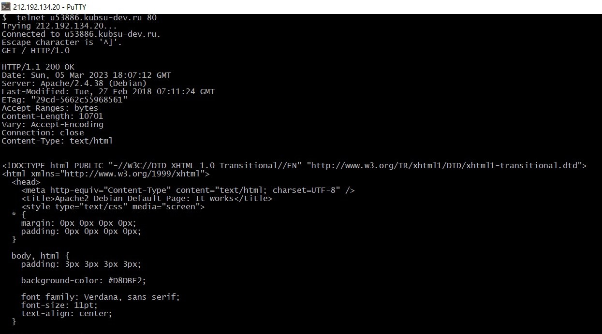
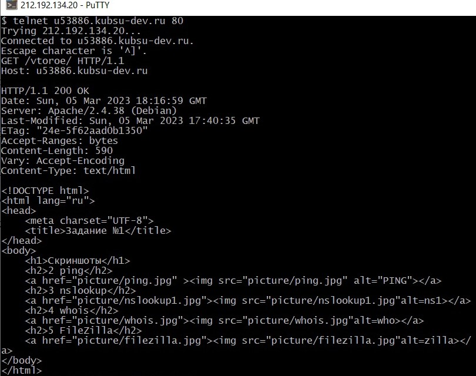
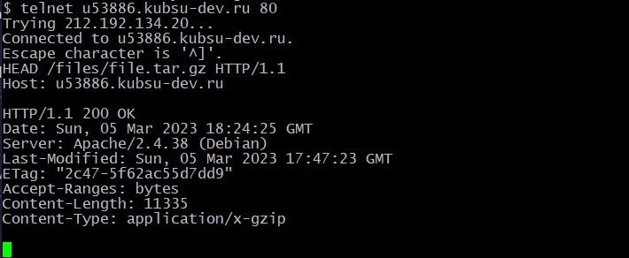
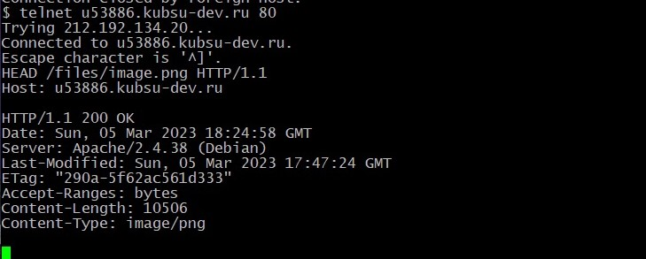
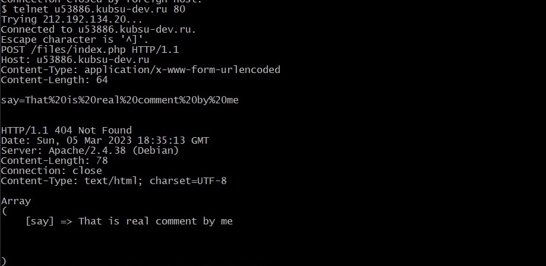
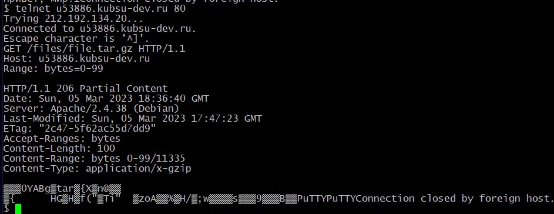
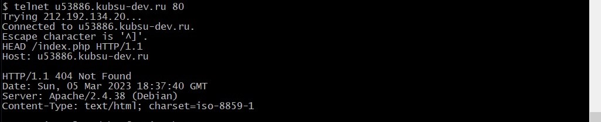

Скриншоты
1 Получение главной страницу методом GET

2 Получение главной страницы методом GET

3 Получение главной страницы методом GET

4 Определить медиатип ресурса

5 Отправка комментария

6 Получение первых 100 байт файла

7 Определение кодировки ресурса
